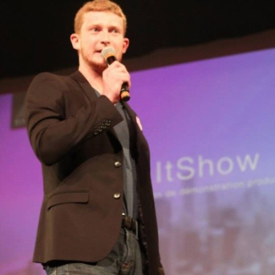

Guillaume Lassiat
Senior UI/UX Designer
Welhavens Gate 1B, 0166 Oslo, Norway
Phone: +47 94450952
Portfolios: www.guillaumelassiat.com | www.worldisavillage.xyz
Professional Summary
Expert UI/UX Designer with over 17 years of experience specializing in intuitive interfaces for complex engineering tools, 3D scientific visualization, and CAD model interactions. Most recently, I contributed to the award-winning Autodesk Forma, designing scalable component libraries and seamless workflows for advanced technical integrations involving APIs, SDKs, and MCPs. Leveraging my background in developing immersive 3D training applications for scientific specialists, I excel at collaborating with computational engineers to translate dense CFD simulation data into clear, high-fidelity mockups. I am eager to bring my strong product thinking to a deep-tech environment, where I can mentor engineering teams on usability principles and elevate the overarching design language.
Professional Experience
Autodesk Forma | UI/UX Designer
May 2023 – April 2026
Lead UI/UX design for complex engineering and architectural software, focusing on contextual data visualization and seamless RCM (Revit Cloud Model) CAD model interactions within Autodesk Forma to Revit and Rhino. I design intuitive interfaces, user flows, and high-fidelity mockups for complex data marketplaces and 3rd-party extensions. I collaborate closely with engineering teams to integrate APIs, SDKs, and MCPs, translating dense technical requirements into clear, usable workflows and scalable component libraries.
Second Design Studio | Co-Founder & Lead Designer
2022 – 2023
Co-founded and managed a design studio specializing in the end-to-end production of 3D applications. Directed the UI/UX design, concept creation, and art direction for immersive 3D scientific visualizations. Defined the overarching design language for complex products, delivering high-fidelity prototypes and intuitive interfaces tailored to specialized user needs.
Biomerieux | Product Designer
2021 – 2023
Designed a highly realistic 3D scientific training application and integrated LMS to train scientists and specialists. Translated complex scientific requirements into clear, intuitive interfaces and user flows, successfully reducing the need for on-site trainers through effective 3D data interaction and immersive learning environments.
Mazars | Visual Identity & Design Manager
2016 – 2018
Managed visual identity and global design initiatives, establishing scalable design systems and defining the design language distributed across more than 80 countries. Collaborated across cross-functional teams to ensure consistent, high-quality user experiences and mentored designers on visual communication principles.
Biosens | Graphic & Digital Designer
2010 – 2013
Created digital content, motion design, and user interfaces tailored for the pharmaceutical and scientific sectors, including major clients like Roche and Pfizer. Ensured complex medical and scientific information was accessible through clear, engaging visual communication and interactive web experiences.
Freelance | UI/UX Designer
2009 – Present
Deliver comprehensive UI/UX design solutions for a diverse portfolio of clients, from tech startups to large corporations like Publicis and Renault. Build wireframes, user flows, and high-fidelity mockups to drive user-centric product experiences, adapt to complex technical environments, and align with strategic business goals.